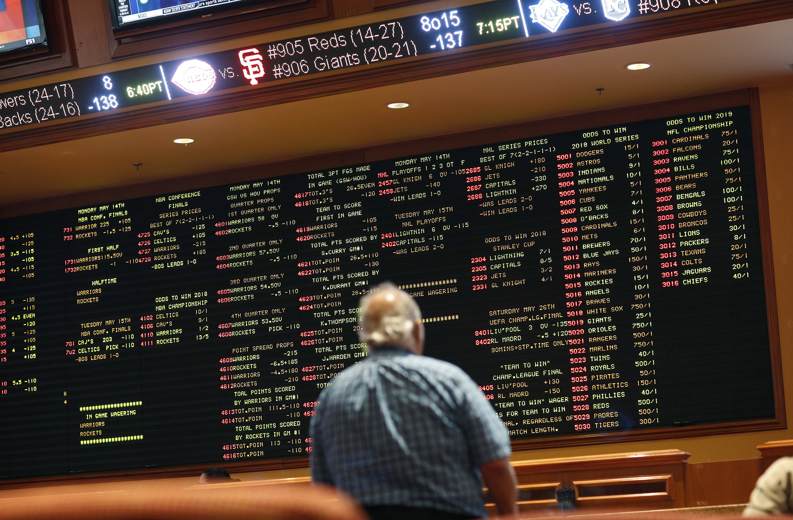

Hi there!
My name is Floris Dobber and I'm currently pursuing a BS in Data Science at Northeastern University. In July I will be starting my second co-op at LineVision where I will be part of the data science team working on analyzing and optimizing critical energy infrastructure. Feel free to reach out to me on any of the platforms below if you want to connect!
Projects & Experience

Cryptocurrency Trading Bot
Designing an automated trading bot that is always active focused on trading cryptocurrencies.

Eaton Vance Co-op
Global Quantitative Data Analysis Co-op at Eaton Vance focused on analyzing data and building models.
Dec 2020

Personal Website
This website, serving as a way to highlight my projects and experience.
Nov 2020

Betting Algorithm
Created an algorithm used to bet on English Premier League matches.
March 2020